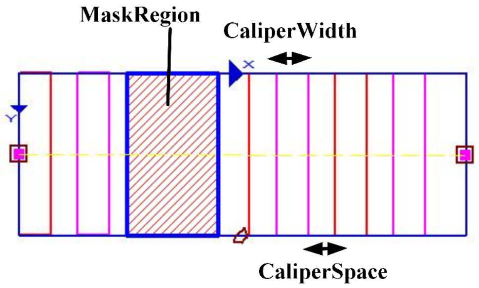

表示可变矩形卡尺，对应的Gui图形控件为scGuiRectEx，表示可变矩形内部的卡尺集合，最外的矩形为可变矩形，内部的小矩形为卡尺。

| 分类 | 接口名称 | 接口描述 |
|---|---|---|
| 构造 | scRectExCaliper | scRectExCaliper ()默认构造函数。 |
| 函数 | GetCaliperNum | 获取卡尺数目。 |
| GetCalipers | 获取所有卡尺 | |
| 属性 | rectEx | 可变矩形卡尺所在的可变矩形 |
| caliperWidth | 卡尺宽度 | |
| caliperSpace | 卡尺间隔 |
功能：构造scRectExCaliper对象。
参数：无。
返回值：无。
功能：获取卡尺数目。
参数：无。
返回值：卡尺个数，整型。
功能：获取可变矩形卡尺中的所有卡尺。
参数：无。
返回值：可变矩形卡尺中的所有卡尺，scRectEx类型的向量形式，相当于Python中的list。
无
无